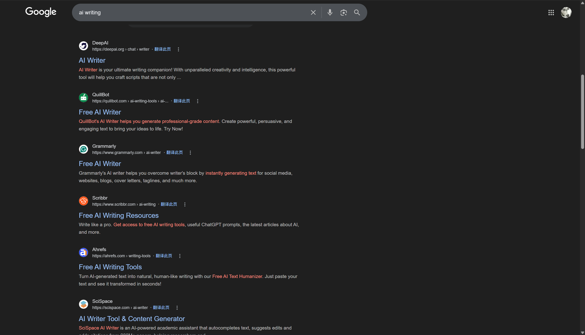
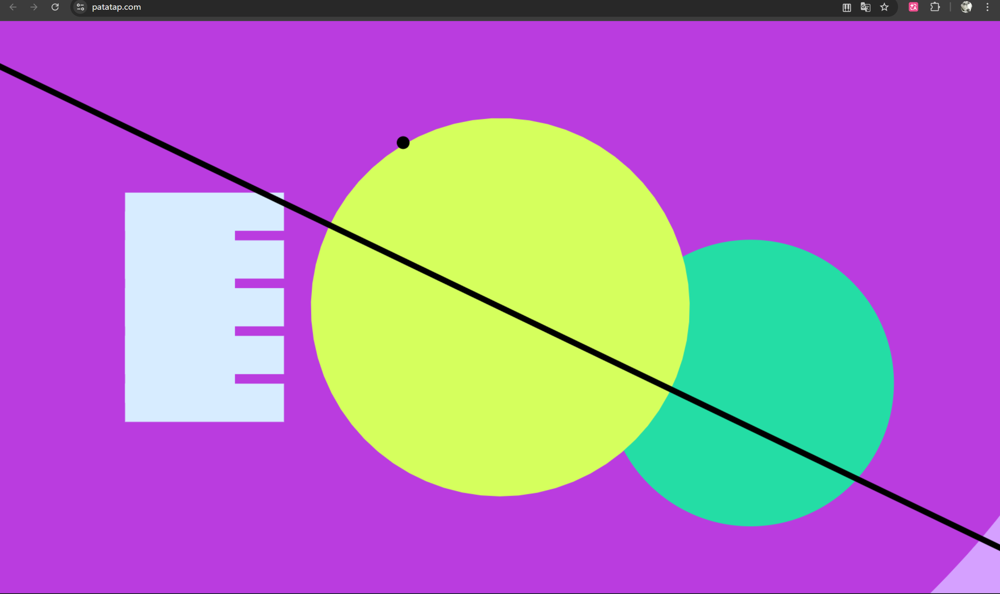
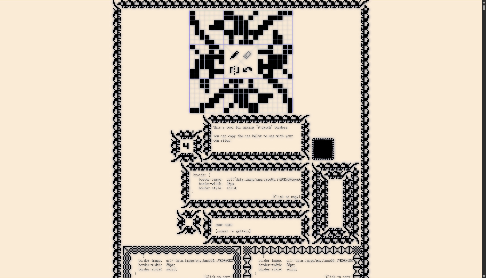
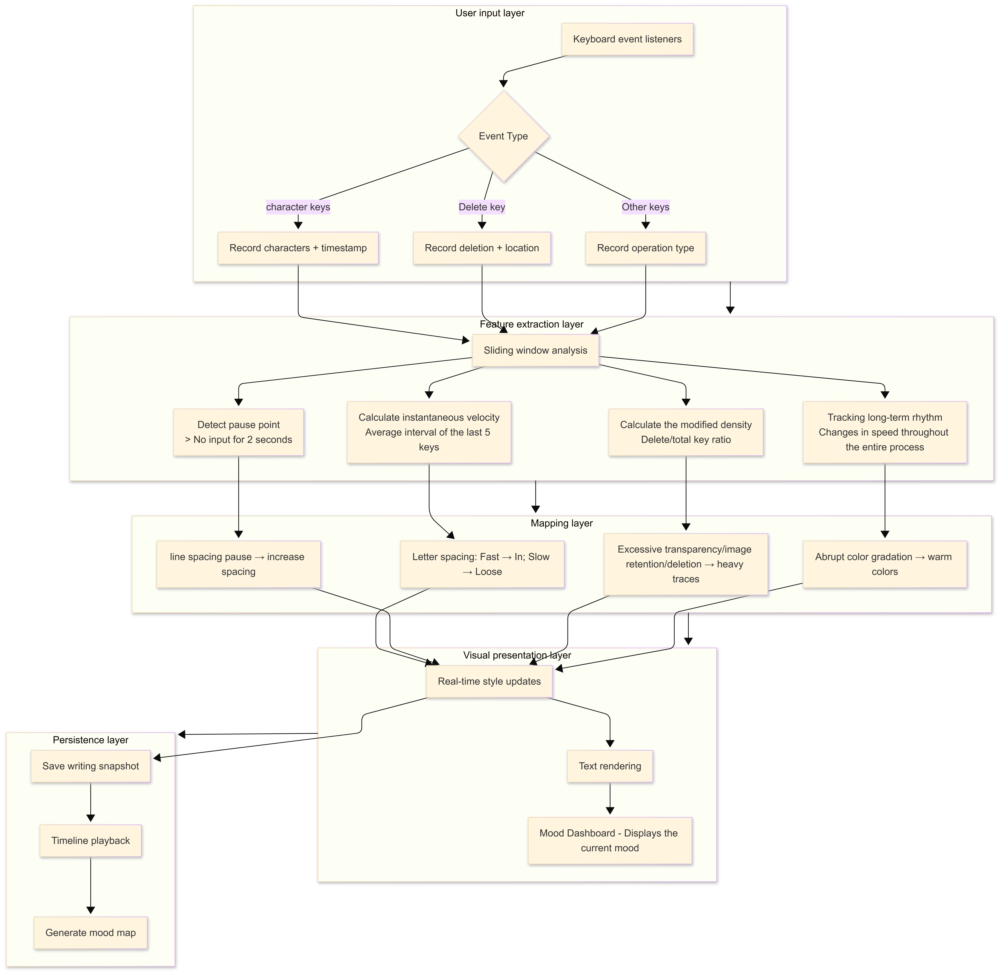

Patrick McMahon's Mediated Expression Studio Work
Yi Fan S4106162
Intro Exercise
Hello, my name is Yi FAN (Spike). This English name comes from the protagonist of the old animated road movie Cowboy Bebop. I started learning digital media because I initially wanted to work in interactive design. I enjoy small, practical, or meaningful projects. The feeling of going From design sketches to on-screen interactive elements, is quite enjoyable for me.
My GitHub profile is https://github.com/yichiban1
In-class experiments
Studio project speculation:"Between typings"
Project purpose: from input tools to expression media
1."Eliminate the trace of input" Efficiency, accuracy, and accuracy of predictions This is the same thing that mainstream input methods and word processing software (such as Microsoft Word, Google Docs, and Apple's default input method) are committed to. They pursue efficiency, accuracy, and accuracy in predictions, with the goal of making typing as transparent as possible, allowing the user's mind to flow to the screen without barriers. The characters on the screen are standardized, indifferent, homogeneous. Whether the user taps the keyboard angrily or hesitates to tap the keys, the final "a" is indistinguishable at the pixel level.

2.In the case of Apple's default input method, it doesn't care at all when my typing speed changes, because it only cares about whether the final input string is correct, and its automatic error correction mechanism often distorts the user's intent into a "standard answer". I try to type an unconventional word, a dialectal expression, or an emotional repetition (like "good, good"), and the input method repeatedly "corrects" you. Behind this design is an implicit assumption: the user's input is noise that needs to be corrected, not the expression itself, which is worth keeping. It makes me think: what happens if the inputs no longer try to erase the user's traces, but retain them, or even amplify them.
3.Transform the typing interface from "tools" to "mediums". Instead of pursuing transparency in input, it makes every moment of input—speed, hesitation, repetition, pause—part of the expression. Writing is no longer just about "what is written", but also about "how to write it". In this framework, typing itself is a performance, a trace remaining, a materialization of emotions, and this is exactly the purpose of "Between typings".
Project Worth: Various "handwritings" of emotions
Feedback can also be more than just output.The primary value of the project is to provide a new way of self-observation. By observing how their words change with the rhythm of typing, users can examine their expression habits in an unfamiliar way. The crowding of text during fast typing may correspond to the rush or anxiety of the mind; The stretching of word spacing during slow typing may suggest deliberation and contemplation. This feedback is not judgmental ("you are typing too slowly") but presentative ("you have such a rhythm in your writing").

Tools like AI writing generators like PerfectEssayWriter.ai utilize large language models to automatically generate complete articles based on user prompts, focusing on final output efficiency. AI writing tools simplify writing to "enter prompt - get results", AI-generated text is often "averaged", the user's subjectivity is weakened, and the whole process is more like eliminating the writing process. The design philosophy of such tools is completely opposite to this project.
Feedback in mainstream interface design is often functional: buttons have visual feedback, clicks have state changes, and errors have prompts. This feedback serves the purpose of "operational confirmation". "Between types" lies in exploring another possibility of the principle of "feedback" Feedback is no longer about confirming that the operation is complete, but about making the process visible. Each keystroke is no longer just a character, but also a sampling of emotions; Every deletion is no longer just a correction of errors, but also a trace left behind. The resulting text is no longer just a semantic carrier, but its visual form itself becomes part of the work.
Input as a creative mediumMore broadly, input methods can be tools for creative expression in their own right. (Patatap validates the possibility of "type is act".) That is, event-driven (keystrokes→ sounds) feedback It does not pursue output, but embraces the immediacy of expression. Patatap's feedback is instant and predictable (each key corresponds to a fixed sound effect), and this certainty creates an "instrumental feel" where users can master "playing" techniques through exploration. Most of today's creative tools focus on "output" - drawing software focuses on the canvas, music software focuses on audio tracks, and word processing software focuses on text. But the input stage—keys, gestures, voice—is often seen as a pure "operation" rather than a part of the "expression."

Framing:Core Mechanisms and Interaction Principles
Core interaction loop
The interaction framework of a project can be summarized as: input behavior → real-time analysis → visual feedback → perceptual adjustments.

Broider's "feature focus" strategy is useful for "between types". It also provides a reference on how to create a complete and useful experience within limitations. Broider's interface is minimalist – an editable grid and a piece of generated code. No tutorials, no settings, no export options. This focus makes the tool extremely inexpensive to learn, allowing users to immediately understand its purpose and receive usable outputs. This "out-of-the-box" design concept has something in common with the immediate feedback pursued by the project itself.
Technical ArchitectureThe project is implemented in native HTML/CSS/Js, and does not rely on external graphics libraries (e.g. Konva.js) and may use audio libraries (e.g. Tone.js). HTML/CSS construction infrastructure and interface style and text rendering, JavaScript handling input events and real-time style updates, event listening and logic processing (keydown, keyup, input events), Tone.js optional extensions for sound dimensions. The data must be real-time and avoid visual jitter caused by excessive sensitivity.

AI Acknowledgement
"I use chatglm to help me refine my ideas and provide suggestions when brainstorming."I also used AI to help me with a problem I encountered when deploying Neocities, specifically the issue of CSS not displaying. Specifically, I added a query parameter to force Neocities to reload the CSS. I added the query parameter ?v=1 to force a cache refresh.